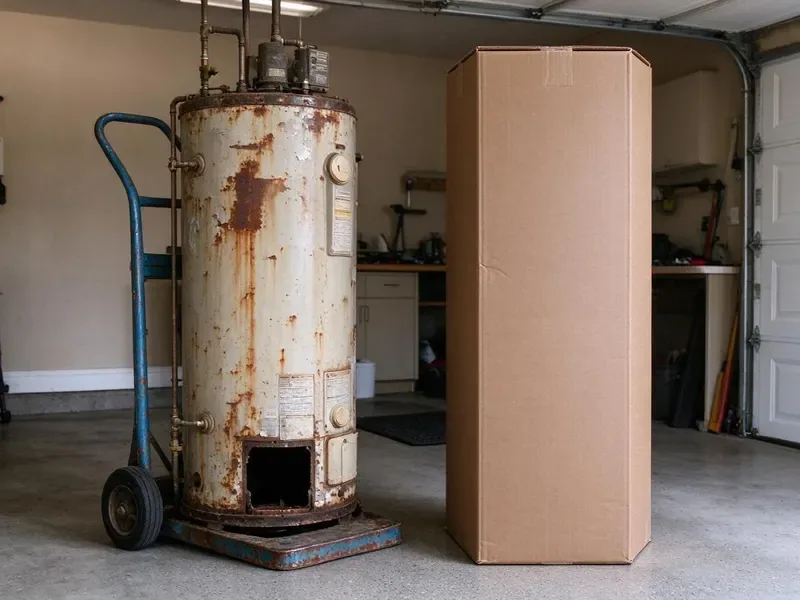
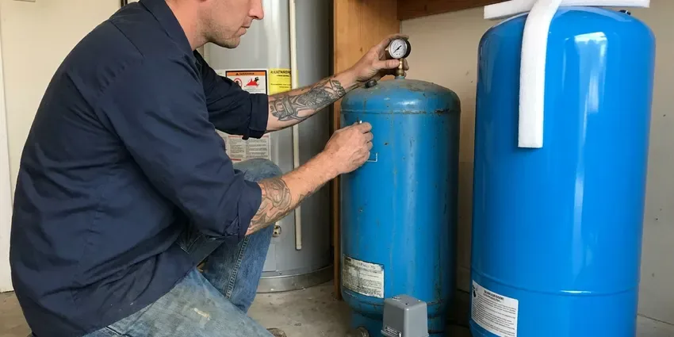

Plumbing Replacement in Clovis, CA
FBL Plumbing handles replacement permits in Clovis, CA, including the inspector's sign-off.
- Tested Before We Leave
- Repair Price Included
- Permits Pulled
- Written Quotes

Time to Replace in Clovis, CA?
Permit, install, inspection and haul-away are all on us.
Plumbing Replacement in Clovis, CA From FBL Plumbing
FBL Plumbing replaces plumbing systems and equipment that have reached the end of their service life. We assess age, condition and repair history, then give you an honest call on whether replacement makes more sense than one more repair. Then we install it. Each replacement meets current code and gets tested under normal use before we pack up.
Some of what we do:
- Open-trench and trenchless sewer replacement
- Water service line replacement from meter to house
- Code upgrades like expansion tanks added

Additional Plumbing Replacement Services in Clovis, CA
When repairs are no longer enough, our replacement services in Clovis, CA deliver durable upgrades that restore full performance.


Customers
Why Choose FBL Plumbing for Plumbing Replacement in Clovis, CA?
Everything our plumbers install meets current code, which often adds a part or two. A thermal expansion tank, a drain pan with a proper outlet or upgraded venting can look like extras, but they protect the new equipment and they are what the inspector will check first. They pay for themselves.
- Repair Price Too, We quote the repair option alongside the replacement.
- Honest Advice, We say so when a repair will do and quote it.
- Code Upgrades, Expansion tanks, pans and venting added where code requires.
Citywide Coverage
Distance in Clovis is not a problem for us. Grouping calls by neighborhood keeps drive time low, and that is a big reason we can often reach a failed heater or pump the day you call. We give you a window.
Experienced Team
The crew is trained on the latest heaters, pumps and softeners. Manufacturers change venting rules, connection sizes and control boards every few years, and a crew that keeps up installs the new model correctly the first time instead of fighting a manual on your garage floor. Training never stops.
Safety-First Approach
Our crews follow Northern California plumbing code on all replacement work, plus each manufacturer's installation rules. Code sets the minimum, but equipment makers add their own requirements on clearances, venting and water quality, and following both keeps the system safe and the warranty in force. We meet both.
Trusted Certified Clovis Plumbing Services Professionals
At FBL Plumbing, we take pride in licensed, certified plumbing services throughout Clovis, CA. Credentials matter in this trade. Every repair, install and maintenance visit follows strict safety and quality rules, and the plumbers doing the work carry recognized industry credentials.
Call Us Now PHCC Plumbing Contractor Recognition
PHCC Plumbing Contractor Recognition Better Business Bureau (BBB) Accreditation
Better Business Bureau (BBB) Accreditation Angi Certified Pro
Angi Certified Pro ISO 9001 Quality Management Certification
ISO 9001 Quality Management CertificationPlumbing Replacement in Clovis, CA
Tankless Water Heater Replacement in Clovis, CA
Switching to tankless when the old tank fails is common in Clovis, CA, but it is a bigger job than a tank swap. The gas draw can be four times a 40-gallon tank, so the meter line usually gets upsized, and the venting moves from B-vent to stainless or PVC. Both are on the quote.

Whole-Home Pipe Replacement in Clovis
Several pinhole leaks, galvanized pipe or polybutylene in a Clovis home usually mean it is better off with a complete repipe. New PEX or copper often runs through the attic and down interior walls, letting us abandon leaking under-slab pipe instead of breaking concrete. The slab stays intact.
Water Heater Replacement in Clovis
Water heaters in Clovis that leak from the tank, rumble on every heat cycle or run out of hot water halfway through a shower are usually cheaper to replace than to keep repairing. A leak from the tank body itself cannot be fixed. We match the fuel and size, update the venting and add an expansion tank or drain pan if code calls for one. Most swaps take a few hours.
Sump Pump and Well Pump Replacement in Clovis, CA
A dead sump pump on a wet night means water on the floor, and a dead well pump means no water at all. In Clovis, CA, sump pumps get sized for inflow with a check valve and an optional battery backup, while well pumps get matched to depth, flow and switch settings. Both get tested before we go.
Gas Line Replacement in Clovis
Old black iron or failing gas pipe in Clovis homes can leak at threaded joints, and a gas leak is not something to wait on. If you smell gas, leave the house, then call the gas utility from outside, and once the line is safe, we replace the damaged section or the whole run, pressure test it and relight every appliance. We test every joint first.
Pipe Replacement & Whole-Home Repiping in Clovis, CA
Homes in Clovis, CA with galvanized steel or polybutylene usually show it the same ways: low pressure, rusty water and leaks that keep coming back. A whole-home repipe replaces every supply line from the main shutoff to each fixture with PEX or copper, and in most homes it takes two to four days with water back on each evening whenever possible. Walls get patched after.
Well Pump & Pressure Tank Replacement in Clovis
Rural homes around Clovis that run on a well have no water at all when the pump quits. The old pump comes up, wire and drop pipe get checked, and the new pump goes in at the right depth, often with a new tank and switch too. Most jobs finish same day.

Sewer Line Replacement in Clovis
Sewer lines in Clovis fail from roots, cracks, collapses and bellies where the pipe sank and now holds waste. Expansive clay soils are common across Northern California, and seasonal swelling and shrinking can crack slabs and buried sewer laterals. We run a camera first. That footage shows exactly where the line failed and how much of it is bad, so you know whether a spot repair, a trenchless liner or a full replacement makes the most sense for your yard.
Plumbing Replacement Near You in Clovis, CA
Typing plumbing replacement near me into a phone turns up plenty of options. Ask each one whether they also quote the repair, whether code upgrades are in the price, and who hauls away the old equipment, because those answers tell you more than a star rating. Our answer to all three is yes.
Thinking a replacement might be due? Book a free estimate with our local crew. We check age and condition, ask about past repairs, and hand you a repair price and a replacement price before leaving. No pressure either way.
FBL Plumbing at a Glance
- Fully licensed plumbing team covering Clovis, CA
- Same-day appointments and 24/7 emergency response
- Upfront, flat-rate pricing before work begins
- 4.8-star rated by 834+ Northern California customers
Clovis Map
Clovis Information
- Population
- 125,826
- Area codes
- 559/209/575
- Service area
- Clovis and communities within 40 miles
- Nearby
- Fresno, Madera, Hanford, Visalia
One rule of thumb: replace when a repair costs more than half the price of new, or when the part is close to its expected age.
Talk to a Plumber
Reach out to FBL Plumbing for honest, reliable plumbing from people who know the trade in Clovis, CA.
Our Specialized Plumbing Services in Clovis, CA
At FBL Plumbing, you get every kind of plumbing service from one company across Clovis, CA. From leak detection to full system installs, our team works fast and charges fair prices on homes and commercial properties alike. Take a look at our core services below:


How a Replacement Project Runs in Clovis, CA
The repair-or-replace call gets made before we order anything.
Request a Quote
Call (669) 319-2034 or use the form to set up a visit. Expect a couple of quick questions.
On-Site Evaluation
In your Clovis home, we inspect the failing part and check the connections. Code updates get noted.
Install
Out with the old, in with the new, to current code. Each joint is checked.
Frequently Asked Questions About Plumbing Replacement in Clovis
Prices vary with the type of work. A water heater replacement might run $1,400 to $3,500, a whole-home repipe $4,000 to $15,000, and a well pump or pressure tank $1,200 to $3,500, with code upgrades, access and permits moving each one up or down. Every price is in writing.
PEX and copper for supply lines. Drains and sewers get PVC, or HDPE on trenchless jobs, and gas lines get black iron or listed flexible gas pipe, depending on code. Each material has a job.
For tanks, Rheem, Bradford White and AO Smith. For tankless, we often recommend Rinnai or Navien.
Frequent leaks, rusty water, steady low pressure, recurring clogs or visible corrosion. Once repairs turn routine, replacement tends to cost less over time.
Permits are commonly required for water heater, water line and sewer line replacements. We take care of permits and inspections.
Leaks that keep coming back, discolored water, low pressure, recurring backups and equipment over 10 years old. An inspection shows what needs replacing.
For many jobs, it is required. Heaters, sewer and gas lines and repipes usually need a permit and inspection. We handle both.
Yes. Burst lines, leaking heaters and dead well pumps are emergencies, and we often replace them the same day. Shut off the water if you can, then call (669) 319-2034.
What People Are Saying About Our Plumbing Experts?

Mark T.
The floor drain in our office break room backed up every few weeks. The plumber ran a cable, then put a camera down and found roots at a joint about thirty feet out. Seeing it on the screen made the decision easy.
Drain Cleaning · Clovis, CA
Kevin O.
Before buying our house I paid for a sewer camera inspection. FBL Plumbing found a belly in the line that held standing water about forty feet from the cleanout. We used the video to get the sellers to fix it before closing.
Sewer Camera Inspection · Hanford, CA
Patricia H.
We had a slab leak that two other companies could not find. FBL Plumbing located it in under an hour with a listening device. They rerouted the line through the attic instead of breaking up the floor, so we kept our kitchen tile.
Slab Leak Repair · Fresno, CA
Tyler J.
We bought a taller comfort height toilet for my dad, who just had knee surgery. The plumber pulled the old one, found the flange was cracked, and replaced it before setting the new bowl. Took about two hours.
Toilet Installation · Madera, CAPaul B.
Our pit pump ran nonstop even in dry weather. The plumber found the check valve was stuck open, so the same water kept cycling back into the pit. New valve, new float switch, done in an hour. It runs quiet now.
Sump Pump · Clovis, CARobert G.
The camera showed a full break in our clay sewer line near the street. FBL Plumbing replaced it with a trenchless pipe burst, so the only digging was two small pits in the yard. They let us watch the footage before and after.
Sewer Line Replacement · Fresno, CA